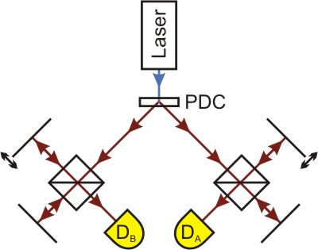
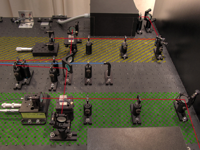

Two-Photon-Interference according to Franson
Interference of a photon pair generated by parametric fluorescence is based on a quantum effect discovered by J.D. Franson [Fra89]. In the interference chapter it was shown how single photons can be brought to interference by a Michelson interferometer.
In sub chapter 5, the importance of the coherence length was explained: If the arm length difference in the interferometer is greater than the coherence length of the single photon, interference cannot be observed. In an interactive screen experiment, the relevance of the filters used was shown. If a small bandpass filter is used which will let photons of the wave lengths 810±10nm pass, the coherence length was approx. 60µm. With a filter creating a spectral width of 810±20nm, it drops to ca. 17µm.
For the following experiment, longpass filters are employed which transmit photons at wave lengths of more than 715nm, which leads to a very short coherence length of about 3.5µm. This ensures that the entire interference area can be travelled through with the translation stage also employed before.
In this experiment, the quantum feature of entanglement again plays a leading role. However, the focus is not on the polarisation features as it was in the respective chapter, but on the generation time and the energy or rather frequency of the photons. These are generated (nearly) simultaneously by parametric fluorescence and thereby also fulfil the requirement ωLaser = ωA + ωB. The frequency of the two photons therefore always add up to the same value.
Setup of the experiment
In order to carry out the experiment, the setup for single photon interference as introduced in the interference chapter is extended. Picture 1 shows an overview of the realisation in the laboratory.
 
Pic. 1: Experiment for two-photon-interference. Sketch on the left, realisation on the right.
Here both photons are lead into an interferometer each and registered with the detectors DA and DB. Thus each photon can be used as a trigger for the other. As in the entanglement chapter, both sides are named individually as "Alice" (with criss-cross yellow lines in the photo) and "Bob" (with green check pattern). Now the coincidences at various positions of the interferometer mirrors are observed. The moveable mirror of interferometer Bob can be shifted by 20µm from any given starting point. This minute change of position is, however, not visible to the naked eye.
The interferometer on Alice's side is positioned at a fixed arm length difference of 50µm throughout all measurements. This ensures that "common" interference events do not occur, as the coherence length of the single photon would not be sufficient for this.
Does interference occur if the interferometer Alice is positioned at an arm length difference greater than the coherence length, and the measurement on Bob's side is carried out within the coherence length (starting point ΔLBob≈0µm)? Can this variation of the counting rate occur if both interfometers show an arm length difference which is greater than the coherence length (starting point ΔLBob≈30µm and ΔLBob≈50µm)?
Which measurement curves could be expected if the photons do not show interference, which if there is interference?
Observation and explanation
If the interferometer Bob is in a configuration where the arm length difference is smaller than the coherence length, interference can be observed. This experiment is basically identical to the one in the interference chapter, Alice's side is again only used for triggering (starting point ΔLBob≈0µm).
Even at an arm length difference which is, in both interferometers, greater than the coherence length of the single photons, interference can be observed, provided the difference between the arm length differences is smaller than the coherence length of the photon pair (starting point ΔLBob≈50µm). This can also be explained by the interferometer's being a frequency measurement appliance in a sense. By frequency entanglement of the photons, the measurement of the frequency of one light quantum also determines that of the other light quantum. Depending on how great the difference in arm length difference is between both sides, either constructive or destructive interference occurs.
The visibility of interference is very high if the arm length difference is smaller than the coherence length (ca. 80-90%). If measurements are carried out around the mirror position ΔLBob≈50µm, visibility is poorer (<50%), which is down to the fact that those cases where one photon runs through the short path of the interferometer while the other photon takes the long path do not occasion interference.
If the arm length differences are not in the same range, with each one of them still greater than the coherence length of the photons, the counting rate, with minor variations, remains stable, so there are no interference effects.
Scientific use of the two-photon-interference
This quantum effect has been used in some experiments in order to demonstrate the necessity and veracity of the quantum theory and also to eliminate the potentiality that explanations within the realms of classical physics exist.
Original data from the experiment: Two-photon-interference according to Franson
Author: Florian Bier, June 2010
Translation: G. Murphy